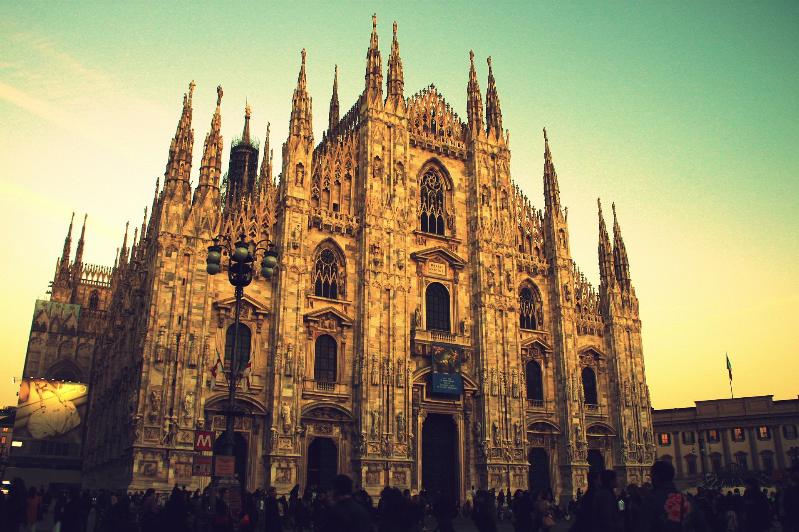
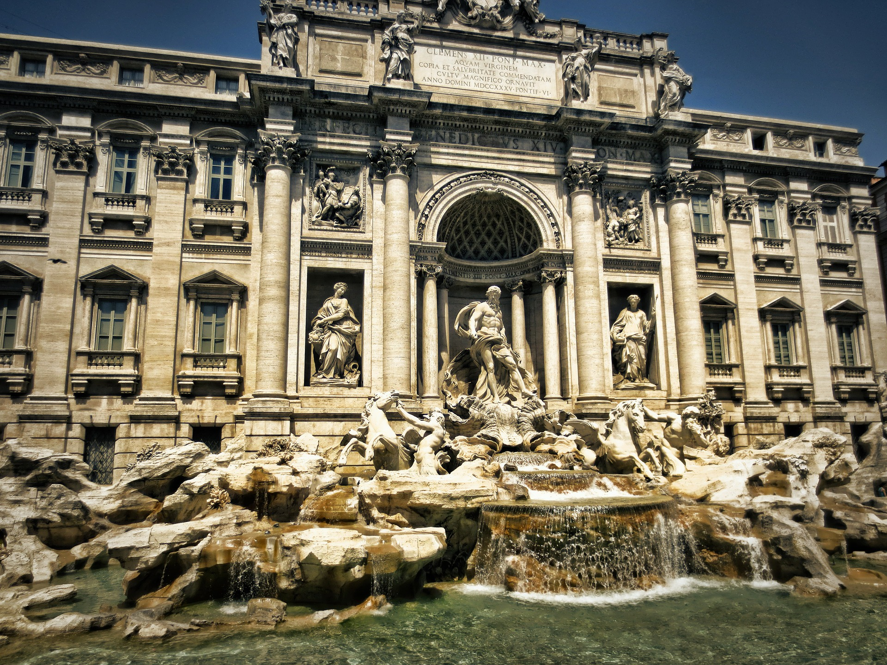
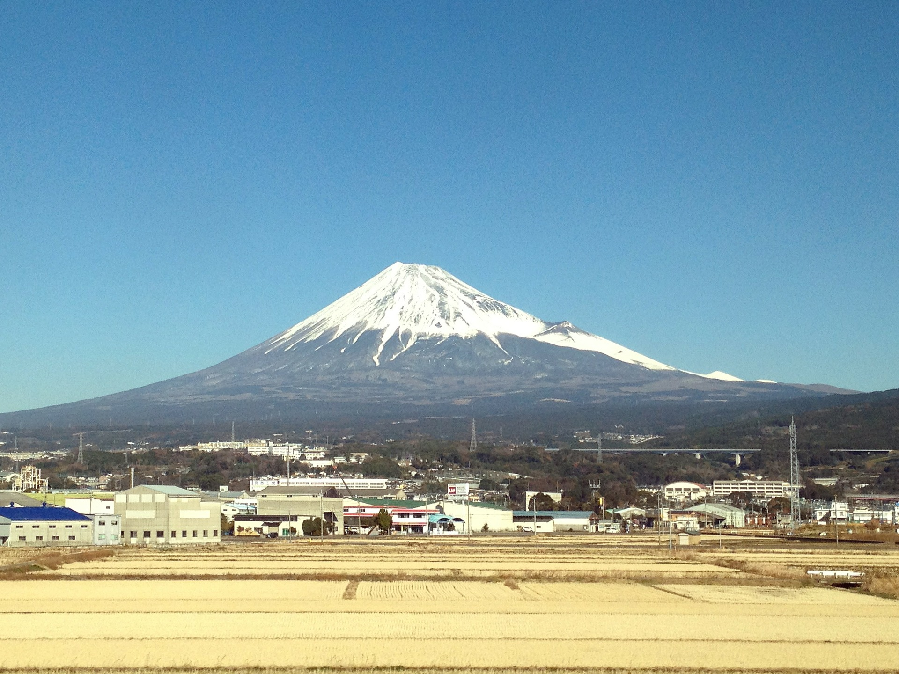

- 
Milan Cathedral, Italy
The Milan Cathedral is the fifth largest cathedral in the world and the largest in Italy. Construction began in 1386, and took nearly six centuries to complete. Come see the elaborate architecture of fourteenth century Italy.
Visit Italy - 
Trevi Fountain, Italy
In Rome's Trevi district the Trevi Fountain, designed by Nicola Salvi was finished in 1762. The fountain is the largest in the city and one of the most well-known around the world. Take a trip and enjoy the beautiful sculptures dedicated to Rome's survival.
Visit Italy -

Himeji Castle, Japan
The Himeji Castle located in Himeji, Japan, has stood for over 650 years. Travel to Japan to see the castle that has had two renovations and was once a fort. This castle is a fine example of Japanese medieval culture from the seventeenth century.
Visit Japan - 
Mt. Fuji, Japan
Located on Honshu Island, Mt. Fuji is the tallest mountain in Japan. This natural wonder has a glorious 360 view of Lake Ashinko and the Owakudani Valley. Take a day cruise with Viator for about $97.
Visit Japan
-

Dunn's River Falls, Jamaica
Take a trip to Jamaica to experience the Dunn's River Falls. This waterfall located on the Dunn's River is a tourist attraction. You can attempt to climp the falls yourself, or with the help of a guide. The falls are surrounded by beautiful flora and trees. Book a tour for about $20 and experience this Jamaican hotspot
Visit Japan
-

Blue Mountains, Jamaica
Conquer the Blue Mountains of Jamaica. See the lush and beautiful nature paths which you can take a bike tour on. Starting at $108, you can take a tour from Kingston, through the mountains. Take a trip to Jamaica and see the beautiful nature for yourself.
Visit Japan